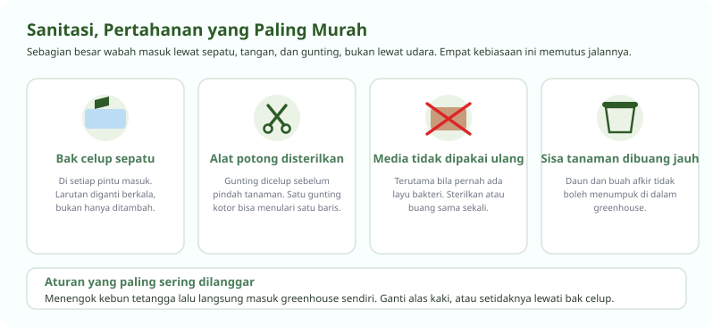
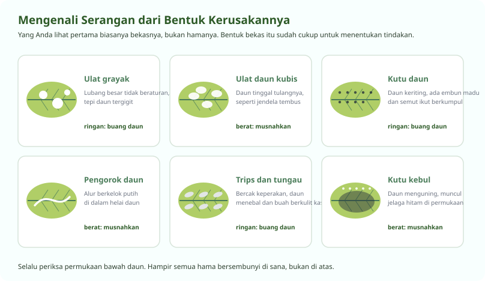
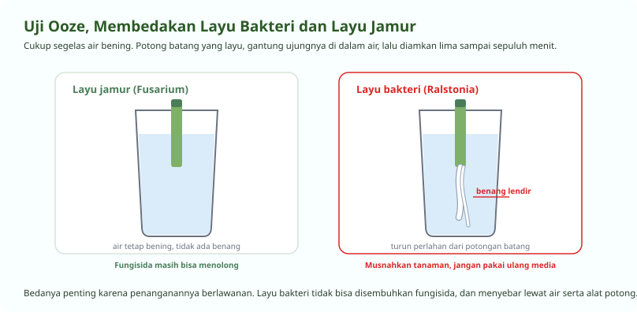

Mencegah Jauh Lebih Murah daripada Mengobati
Sebagian besar wabah masuk lewat pintu, bukan lewat udara
Di greenhouse, penyakit jarang datang sendiri. Ia dibawa masuk oleh sepatu, tangan, gunting, media bekas, atau bibit yang sudah sakit sejak dari persemaian. Karena itu pertahanan pertama bukan pestisida, melainkan kebiasaan.
Yang kedua adalah mata. Memeriksa tanaman setiap hari membuat Anda menemukan serangan saat masih beberapa daun, bukan setelah setengah baris terinfeksi.

Mengenali Hama dari Bekasnya
Yang Anda lihat pertama biasanya kerusakannya, bukan hamanya

| Hama | Tanaman yang diserang | Ciri kerusakan | Tindakan |
|---|---|---|---|
| Ulat grayak | Sayuran daun | Lubang besar tidak beraturan, sering menyerang malam hari | Ambil manual saat sore, buang daun rusak |
| Ulat daun kubis | Sawi, pakcoy, kale | Daun berlubang seperti jendela, tinggal tulang daunnya | Pasang perangkap, buang daun yang parah |
| Kutu daun | Hampir semua tanaman | Daun keriting, ada embun madu lengket dan semut berkumpul | Semprot air bertekanan, buang pucuk yang parah |
| Pengorok daun | Terong, tomat ceri | Alur berkelok putih di dalam helai daun | Buang daun yang terkorok, jangan dibiarkan di lantai |
| Trips dan tungau | Paprika, cabai, terong | Bercak keperakan, daun menebal, kulit buah kasar berjaring | Naikkan kelembapan, semprot bila serangan meluas |
| Kutu kebul | Tomat, terong, timun | Daun menguning, muncul jelaga hitam, penular virus keriting | Pasang perangkap kuning, musnahkan tanaman bervirus |
Menentukan Tingkat Tindakan
Tidak semua serangan perlu disemprot
-
Serangan ringan, cukup buang bagian yang rusak
Beberapa daun berlubang atau segelintir kutu di pucuk masih bisa diatasi dengan tangan. Buang daun yang rusak dan bawa keluar greenhouse, jangan dijatuhkan di lantai.
-
Serangan menyebar, semprot sebelum mencabut
Kalau serangan sudah melewati beberapa tanaman, semprot lebih dulu baru cabut tanaman yang parah. Mencabut duluan membuat hama beterbangan ke tanaman sehat di sekitarnya.
-
Serangan berat, musnahkan dan tanam ulang
Kalau satu blok sudah tidak tertolong, cabut semuanya, semprot sisa-sisanya, sterilkan bedengan dan medianya, lalu tanam ulang. Mempertahankan tanaman sakit hanya memperpanjang sumber penularan.
-
Tanam ulang secepatnya
Bedengan yang dibiarkan kosong terlalu lama justru menjadi tempat gulma dan hama bertahan. Setelah disterilkan, segera isi kembali.
Satu aturan penting untuk tanaman yang bunganya ikut dipanen atau dimakan: jangan menyemprot pestisida pada bagian yang akan dikonsumsi. Untuk tanaman buah, hentikan penyemprotan dengan jarak waktu aman sebelum panen sesuai anjuran pada kemasan.
Membedakan Penyakit
Salah menebak berarti salah menangani
Layu jamur atau layu bakteri, uji dengan segelas air

Potong batang tanaman yang layu, gantung ujung potongannya di dalam gelas berisi air bening, lalu diamkan lima sampai sepuluh menit. Kalau muncul benang lendir keruh yang turun perlahan dari potongan, itu layu bakteri. Kalau airnya tetap bening, kemungkinan besar layu jamur seperti Fusarium.
Perbedaannya menentukan, karena penanganannya berlawanan. Layu jamur masih bisa ditekan dengan fungisida dan perbaikan drainase. Layu bakteri tidak bisa disembuhkan sama sekali. Tanaman harus dimusnahkan, medianya tidak boleh dipakai ulang, dan semua alat potong yang menyentuhnya harus disterilkan.
Penyakit lain yang sering muncul
| Penyakit | Gejala | Penyebab utama | Tindakan |
|---|---|---|---|
| Embun bulu pada kemangi | Bercak kuning di atas daun, lapisan keabuan di bawahnya | Kelembapan tinggi dan udara tidak bergerak | Buka jendela, jarangkan tanaman, buang yang parah |
| Bercak daun pada selada | Bercak bulat kecokelatan dengan tepi lebih gelap | Daun basah terlalu lama | Jaga daun tetap kering, perbaiki aliran udara |
| Busuk ujung buah pada paprika dan tomat | Ujung buah menghitam dan mengeras | Kalsium tidak terangkut, bukan karena kurang pupuk | Jaga EC tidak berlebihan, pasokan air stabil, udara bergerak |
| Virus keriting kuning | Daun muda keriting, menguning, tanaman kerdil | Ditularkan kutu kebul | Musnahkan tanaman, kendalikan kutu kebul, tidak ada obatnya |
Pertanyaan Seputar Modul Ini
Yang paling sering ditanyakan peserta
Bagaimana membedakan layu karena jamur dan layu karena bakteri?
Lakukan uji ooze. Potong batang yang layu, gantung ujungnya di dalam gelas berisi air bening, lalu diamkan lima sampai sepuluh menit. Kalau muncul benang lendir keruh yang turun perlahan dari potongan batang, itu layu bakteri. Kalau air tetap bening, kemungkinan besar layu jamur.
Bedanya penting karena penanganannya berlawanan. Layu jamur masih bisa ditekan dengan fungisida dan perbaikan drainase, sedangkan layu bakteri tidak bisa disembuhkan. Tanaman harus dimusnahkan dan medianya tidak boleh dipakai ulang.
Kenapa ujung buah paprika dan tomat saya menghitam?
Itu busuk ujung buah, dan penyebabnya kalsium yang tidak sampai ke ujung buah. Hampir selalu kalsium di larutan sudah cukup, masalahnya pada pengangkutan.
Tiga pemicu tersering adalah EC di daerah akar terlalu tinggi, pasokan air yang naik turun, dan udara terlalu lembap sehingga tanaman berhenti menguap. Perbaiki ketiganya. Menambah pupuk kalsium tanpa itu tidak akan menolong.
Apa tanda serangan trips dan tungau pada tanaman buah?
Bercak keperakan pada daun, daun yang menebal dan menggulung, serta kulit buah yang menjadi kasar berjaring. Keduanya sangat kecil dan biasanya baru ketahuan setelah kerusakannya terlihat.
Periksa permukaan bawah daun dan bagian dalam bunga secara rutin. Kelembapan yang terlalu rendah menguntungkan tungau, jadi menjaga kelembapan tetap wajar sudah menekan populasinya.
Apakah media tanam bekas boleh dipakai lagi?
Boleh, asal tanaman sebelumnya sehat dan medianya disterilkan lebih dulu dengan cara direndam lalu dibilas sampai bersih.
Tetapi kalau kebun Anda pernah terkena layu bakteri atau penyakit tular tanah lain, media bekasnya harus dibuang, bukan disterilkan. Risiko kehilangan satu siklus tanam jauh lebih mahal daripada harga media baru.
Kenapa daun tomat saya keriting dan menguning?
Kalau yang keriting adalah daun muda dan tanaman ikut kerdil, kemungkinan besar itu virus keriting kuning yang ditularkan kutu kebul. Tidak ada obatnya. Tanaman harus dimusnahkan agar tidak menjadi sumber penularan.
Kalau daunnya menggulung tetapi warnanya tetap hijau dan tanaman tumbuh normal, itu biasanya reaksi terhadap suhu tinggi atau pemangkasan berlebihan, dan tidak berbahaya.
Seluruh modul boleh dibaca berurutan atau melompat sesuai kebutuhan. Lihat daftar pelatihan hidroponik, atau semua jalur pelatihan.